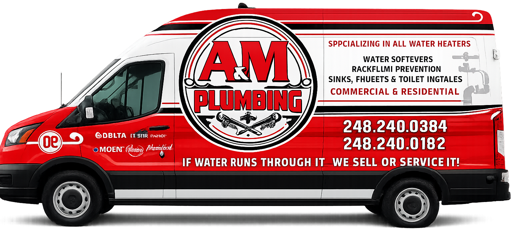

★★★★★
“I'm the longest-standing board member of the Michigan BBB at 26 years. I'd recommend Mike and A&M Plumbing to anyone I know and rate their service a perfect A+.”
Dean CampbellRetired Financial Advisor, BBB Board MemberFor plumbing, water heaters, leak detection, drain cleaning, and repair work across Holly and Oakland County. We pick up. We show up. We fix it.

Clean work, clear communication, and fair pricing before the work begins.
Mystery drips, burst pipes, slab leaks, and hidden water problems found and fixed.
Learn more → 🔥Repair, replacement, gas or electric units, and tankless water heater upgrades.
Learn more → 🌀Clogs, backups, sewer line clears, camera scopes, and clean-out solutions.
Learn more → 🔧Toilets, faucets, fixtures, bath and kitchen plumbing, and remodel support.
Learn more →Need a Holly-area plumber fast? A&M Plumbing is your family-owned one-stop shop for leaks, water heaters, drains, and remodels. We pick up the phone, show up on time, and fix it right.
Mike Hassett started A&M in 2016 with one goal: treat every customer like a neighbor. Today the team — Aaron, Art, Jeff, David, and Alan — carries that same promise into every home they visit.
Licensed, background-checked, trained, and personally vetted before wearing the A&M name.
Flat-rate quotes before work starts. No surprise fees, no pressure, no inflated estimates.
The team diagnoses the root cause and fixes it once — no band-aids, no callbacks.
If it is not right the first time, A&M comes back and makes it right.
4.8 Google Rating
“I'm the longest-standing board member of the Michigan BBB at 26 years. I'd recommend Mike and A&M Plumbing to anyone I know and rate their service a perfect A+.”
Dean CampbellRetired Financial Advisor, BBB Board Member“Called at 9am with a leaking water heater — they were at my house by noon, fair price, no upsell. This is how local business should be done.”
Sarah M.Holly, MI“Mike's team replaced our main shut-off and re-did the basement plumbing. Clean work, honest quote, and they walked me through every step. Highly recommend.”
Jeff R.Clarkston, MIBased in Holly, MI and serving homeowners throughout the area.
Tell us what is going on and we will help you get the right plumbing solution scheduled.